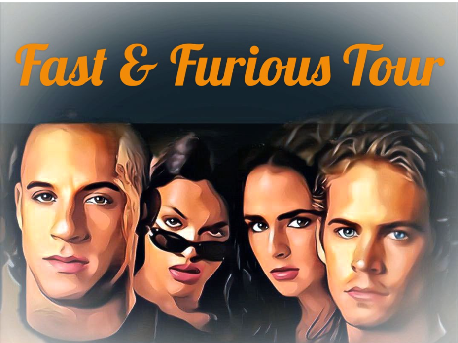

映画『ワイルド・スピード』ロケ地巡りツアー
映画『ワイルド・スピード』シリーズで世界的に有名な、カリフォルニア出身のハリウッド俳優ポール・ウォーカーさんが亡くなったのは2013年11月不慮の事故で天国へと旅立ちました。ウォーカーさんは地元ロサンゼルスのグレンデール出身で、映画『ワイルド・スピード』や『アクション・マシン』などのハリウッド映画に多数出演し、日本でも人気の高い俳優さんでした。性格もとてもよく、事故で亡くなったのも慈善事業をしていた最中でした。ポール・ウォーカーさんは皮肉にも、まさに映画のような事態でまだ40歳という若さでこの世を去りました。このツアーではそんな素晴らしい俳優、ポール・ウォーカーさんを追悼して、『ワイルド・スピード』のロケ地や彼の思い出の地にご案内いたします。
また、2015年4月には待望のワイルドスピード7、スカイミッションが日米で公開されます。その最新トレーラーをご覧ください。ツアーでは、ギャスタたちがサンゼルスのダウンタウンに向かって立っている場所にもご案内いたします。
ロケ地マップ
ピンをクリックすると実際に撮影された映画のワンシーンが流れます
タイムスケジュール(例)
あくまでサンプルですので、お客様のご要望に合わせて柔軟に対応いたします。
他のロケ地ツアーと併せてご案内することも可能ですので、何なりとお申し付けください。
ツアー時間は5時間～8時間になります
| 時間 | 活動 | 場所 | 詳細 |
|---|---|---|---|
| 10:00 | ホテルで待ち合わせ | ご宿泊のホテル | ご宿泊のホテルまでお向かいに上がります |
| 11:00 | ワイスピのロケ地ツアー | ロサンゼルス | ワイスピのみならずLAの見所をご案内！！ |
| 12:00 | ランチ | 現地のレストラン | お勧めのレストランをご案内します |
| 13:30 | ワイスピのロケ地ツアー | ロサンゼルス | 午後も張り切って行きましょう💪 |
| 18:00 | 夕食 | 現地のレストラン | お勧めのレストランをご案内します |
| 19:00 | ホテルで解散 | 宿泊ホテル | ご宿泊のホテルで解散になります |